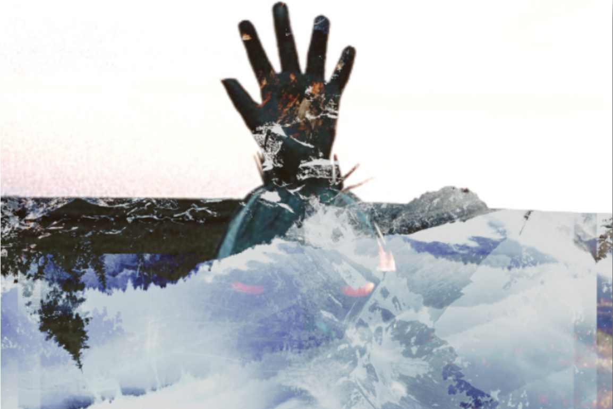

Explosions in the Sky
The concept of "Explosions in the Sky" was concieved through some inspirational foundations of "Wildlife." Specifically, the entire focal point of the image. I was sitting outside of an old job on break when I snapped the original. It was a nice summer evening, I remember hearing a crowded venue off in the distance wishing I was there. The explosive aspect comes from whatever inner emotional interplay was rushing through my mind at the time. It could be percieved as a rift between two places, such as the place I was and wanted to be - where the additional image used for the sky was originally taken - and where I was at the time.

Cogitation
"Cogitation" refers to the act of thinking deeply about something; contemplation. I could have very well called this piece "Contemplation," however, I like the implication of subtle difference yet synonymous meaning. The focal point is was an image taken from a roadside attraction while my friend Connell and I were driving through rural Minnesota on the way to his new life in Seattle, WA to settle in with a few of our closest friends. The eventful days and sleepless nights spent driving out there and the few nostalgic weeks staying out there with all of them before heading back to reality were some of the best in my life. Subtle difference in space, synonymous meaning in time.

Wildlife
I did not take the original images used for this composition, my friend Jude Thomas in Seattle, WA had the privilege. Jude is arguably my closest friend, and the compiled images used for the unified whole could be percieved to represent foolish or procrastinative navigation. Wandering through the world or life while headed toward some seemingly necesssary and important goal or resolution. Only to realize that obstacle was ultimately meaningless, foolishly having worried oneself over nothing of much importance in the first place.